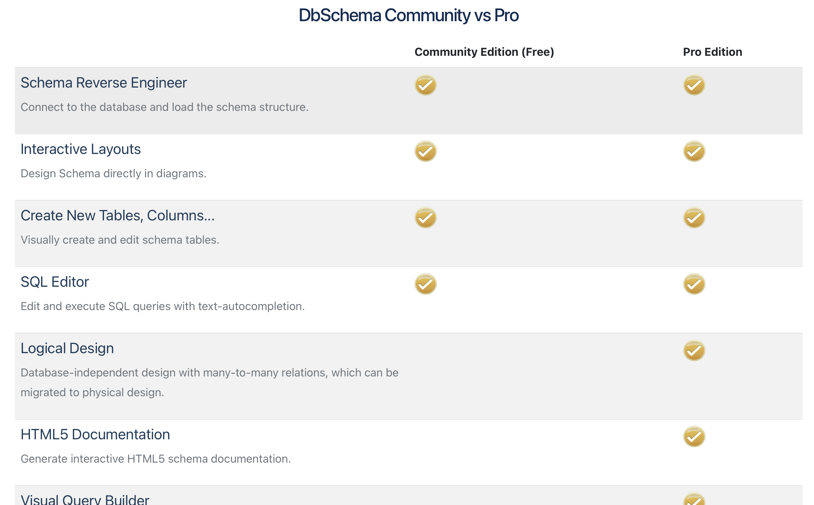
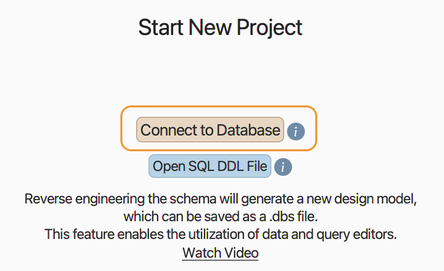
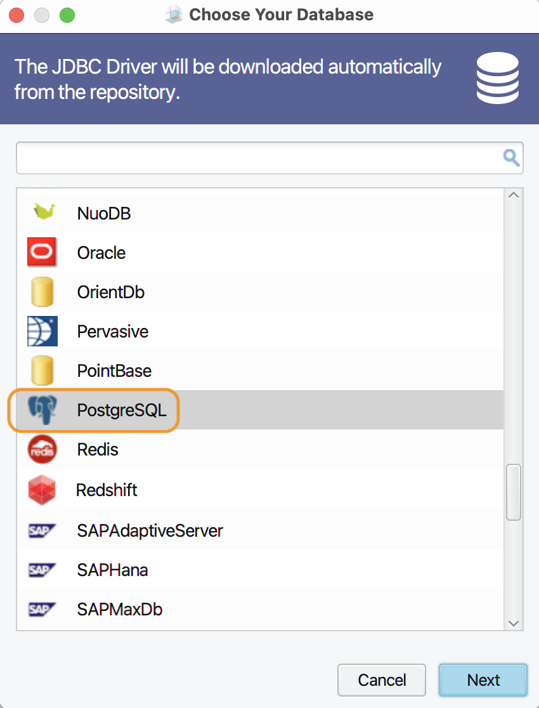
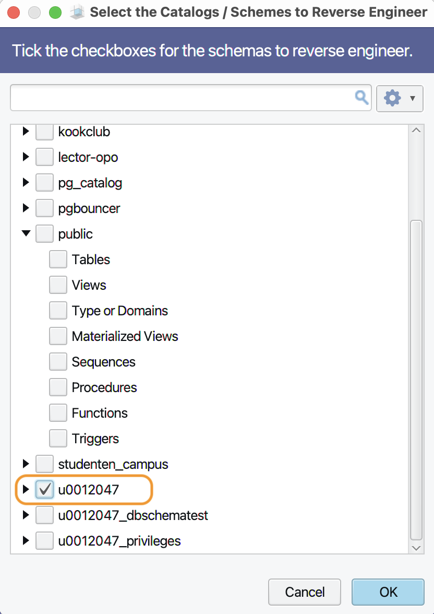
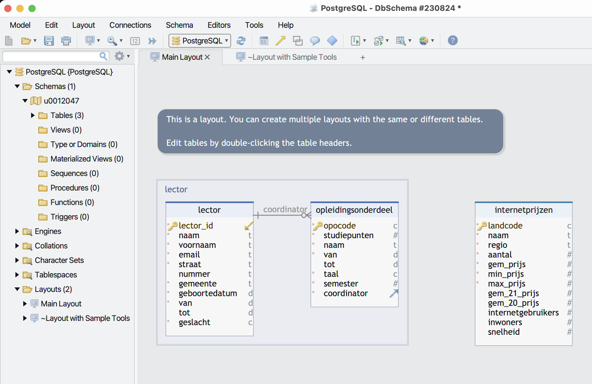
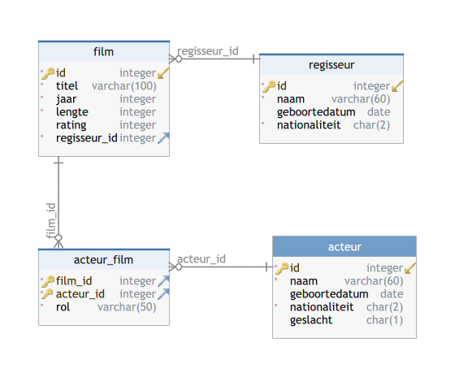

Success is no accident. It is hard work, perseverance, learning,
studying, sacrifice and most of all, love of what you are doing or
learning to do.
—Pele
DBSchema PostgreSQL client
We introduceren een nieuwe tool: DBSchema. Deze databankclient doet in
grote lijnen hetzelfde als pgAdmin: communicatie met de databankserver. Je zal deze tool goed kunnen gebruiken in de grotere opdracht die bij
dit OPO hoort. Als voorbeeld maken we een eenvoudig schema met vijf
tabellen. Omdat we merken dat studenten vaak wat moeite hebben om te
begrijpen hoe ‘foreign keys’ en tussentabellen werken, maak je ook een
kleine oefening met INSERT INTO op dit nieuwe schema.
Clients voor PostgreSQL
Zoals je weet spreek je een databankserver (zoals PostgreSQL) nooit
rechtstreeks aan. Alle communicatie verloopt via een client. We gebruikten
tot nu toe pgAmin. Die is open source, gratis en bovendien zeer geschikt
voor wat we willen doen. Er zijn echter heel wat alternatieve clients:
Open source: DBeaver, SQuirrel, SQL Workbench/J, …
We maken nu kennis met een commerciële softwaretool: DBSchema.
Voorstelling DBSchema
DBSchema is een geavanceerde database management tool. Het kan
met heel wat verschillende DBMS overweg: MySQL, PostgreSQL, Oracle, SQL
Server, Sqlite enz. Er bestaat een zogenaamde ‘Free Community Edition’ en
een ‘Pro Edition’.

Voor heel wat dingen die we willen doen is de gratis versie voldoende,
terwijl er in de betalende versie toch wel een paar dingen zitten die
nuttig kunnen zijn voor het uitwerken van een grotere opdracht.
Als je DBSchema installeert, krijg je gedurende twee weken de volledige
versie gratis.
Daarom wachten we liefst zo lang mogelijk om deze software te
installeren, tot het moment waarop je aan de grote opdracht begint
. Na deze twee weken kan je vragen om de testperiode van de pro
versie nog eens te verlengen met twee weken zoals uitgelegd op https://dbschema.com/evaluate.html.
DBSchema heeft een goede documentatie. We gebruiken voor dit OPO trouwens maar een beperkt deel van alle
functies van deze clientsoftware.
Een schema ‘reverse engineeren’
Meestal gebruiken we DBSchema als volgt: je tekent een fysiek model en
DBSchema genereert alle SQL code om dit model in PostgreSQL te bouwen op
de server.
Maar het kan ook omgekeerd. In dit stukje tonen we hoe je met DBSchema
een bestaand schema op onze databankserver kan ‘reverse engineeren’
. Dat wil zeggen dat DBSchema connectie maakt met het bestaande
schema en hiervan een fysiek model reconstrueert.
In het hoofdstuk ‘Eén-op-veel relaties’
bouwde je een klein model (bestaande uit twee tabellen
‘Opleidingsonderdeel’ en ‘Lector’) in het schema met als naam je
r-nummer, in de databank van je reeks. Kijk je nu eens even na via
pgAdmin of dat schema er inderdaad is? Indien niet: maak het dan even
aan via de stappen in dat hoofdstuk (tien minuten werk).
Met het volgende stappenplan laat je DBSchema verbinding maken met onze
databankserver en zet deze client je schema om naar een fysiek model.
Zoals altijd: voer deze stappen zelf uit!
Het volgende filmpje hoe je een bestaand schema importeert in DBSchema en
hoe je daarna enkele instellingen kan wijzigen. Onder het filmpje staan de
concrete stappen die je moet zetten. Misschien vind je de combinatie
film–stappenplan ideaal? Eerst even het filmpje bekijken en daarna de
stappen in de opdracht één voor één lezen en uitvoeren?
Mijn lectorcode (en dus ook de naam van mijn schema) is ‘u0012047’.
Vanzelfsprekend vervang je in het onderstaande dit door je eigen
r-nummer.
Start pgAdmin op en ga met de pooling connectie naar de databank van
je reeks en hierin naar jouw schema. In mijn geval zie ik dat mijn
schema ‘u0012047’ de gewenste tabellen ‘lector’ en
‘opleidingsonderdeel’ bevat:
Even snel testen of deze tabellen ook data bevatten:
SELECT *
FROM u0012047.opleidingsonderdeel; --en analoog met de tabel lector
Dat ziet er dus goed uit. Tijd om DBSchema te starten. Op de
openingspagina kies je voor ‘Start New Project’ met als optie
‘Connect to Database’. Dat kan trouwens ook via het menu: Model >
New connected to the database.

DBSchema kan met tientallen DBMS overweg. Kies uit het lijstje de
ondertussen bekende olifant:

In het volgende dialoogvenster kies je bij ‘JDBC URL’ voor de optie
‘Standard’. Vul dan de gegevens verder in zoals in onderstaande
screenshot. Als ‘Database User’ kies je voor de local user die je
aanmaakte voor de pooling-connectie en bijbehorend wachtwoord (waar
we in de handleiding over vertelden “bewaar dit wachtwoord in een .txt bestand”). Vanzelfsprekend
kies je voor de pooling-connectie het juiste getal: de
schermafbeelding toont de versie van academiejaar 2022-23. Bij
‘Database’ moet je waarschijnlijk de naam van de databank van je
reeks typen (e.g. 1TI9 enz).
In het tabblad ‘Settings’ moet je nog bij ‘Connection Properies’ prepareThreshold=0; invullen:
Nu kan je dit venster bevestigen met ‘Connect’. Als alles goed gaat,
krijg je de inhoud van de databank te zien. Selecteer nu alleen het
schema dat je wilt ‘reverse engineeren’:

Dit is het resultaat in DBSchema:

Er zijn enkele dingen die we niet wensen:
Het commentaarveldje ‘This is a layout …’;
de rechthoek ‘lector’;
de tabel ‘internetprijzen’.
De eerste twee (layout en rechthoek) kan je ‘droppen’. Als je dat
bij de tabel ‘internetprijzen’ doet,
wordt die tabel effectief verwijderd op de server, dus hier toch
maar liever kiezen voor ‘exclude from layout’
bij het rechtsklikken op deze tabel.
DBSchema voor het uitvoeren van SQL query's
Je kan DBSchema natuurlijk ook gebruiken op dezelfde manier als pgAdmin,
voor het uitvoeren van query's, zoals de volgende video toont:
Fysiek model bouwen in DBSchema
‘Reverse Engineering’ is een fijne tool om te hebben, maar wat we meestal
willen is het omgekeerde:
een fysiek model tekenen en dat op de databankserver bouwen. Dat bekijken we in dit deel. Opnieuw een doe-tekst, zoals je dat
ondertussen van ons gewoon bent.
Het onderstaande voorbeeld (van een filmdatabank) is niet alleen een
illustratie van de stappen die je moet zetten in DBSchema, maar we
gebruiken het ook om nog eens alle stappen van een grotere opdracht te
doorlopen:
probleemomschrijving;
conceptueel model;
logisch model;
fysiek model;
data toevoegen.
Beschrijving van een filmdatabank
Je bent een filmliefhebber en wilt alle films die je bekeken hebt in een
databank bijhouden. Een film heeft een titel, jaar van release en een
lengte in minuten.
We gaan er om didactische redenen even van uit dat elke film maar één
regisseur heeft (wat natuurlijk soms niet het geval is). Van een regisseur hou je de naam, nationaliteit en geboortedatum bij.
Je wil je film ook een rating (geheel getal van 0 t.e.m. 5) meegeven.
In elke film kunnen meerdere acteurs meespelen. Een acteur heeft ook een
naam, nationaliteit, geboortedatum en geslacht (M, V of X). Als een acteur
in een film speelt, houden we ook graag de naam van het karakter bij dat
de acteur in deze film speelde. Als een acteur meerdere rollen speelde in
de film, komen alle namen achter elkaar, gescheiden door komma's.
Conceptueel model
Wij kozen er in het deel ‘modelleren’ voor om al in de conceptuele fase na
te denken over mogelijke natuurlijke primaire sleutels. Dat hoeft niet zo
te zijn: er zijn ook methodologieën die pas in het logisch model over
primaire sleutels nadenken. Is een filmtitel in dit opzicht uniek?
Vermoedelijk niet, zoals heel wat remakes aantonen. Filmtitel en jaar dan? Of filmtitel en regisseur? Om al deze vragen
voor te zijn kiezen we voor de eenvoud gewoon voor een film_id (net zoals je
als student ook een uniek r-nummer hebt).
Voor acteur en regisseur maken we dezelfde keuze. We kunnen met
samengestelde sleutels beginnen, maar dat maakt één en ander wat
moeilijker …
Teken zelf een mogelijk conceptueel model voor deze filmdatabank. Wat
zijn de entiteittypes? Attributen? Relaties?
Als entiteittypes herken je ongetwijfeld: film, acteur en regisseur,
elk met een aantal attributen. Een acteur heeft als relatie met een
film ‘speelt in’ en een regisseur regiseert een film. Het conceptueel
model kan er dus als volgt uitzien:
Waarschijnlijk is het enige moeilijke in dit model het attribuut ‘rol’
van de relatie tussen ‘Acteur’ en ‘Film’. Als je dit een attribuut van
het entiteittype ‘Acteur’ zou maken, dan kan elke acteur maar één rol
spelen …
Wat de cardinaliteiten betreft is er wat discussie mogelijk. Ben
je ook een acteur als je nog in geen enkele film gespeeld hebt? Idem voor
regisseur. In onze vereenvoudigde voorstelling heeft elke film juist 1
regisseur.
Logisch model
Voor het logisch model beslissen we dat deze databank in een
relationeel datamodel
zal gemaakt worden. De keuze voor welk DBMS precies (MySQL, PostgreSQL,
Oracle, …) is voor later.
We denken in deze stap na over tabellen en soorten relaties tussen de
verschillende tabellen.
Maak een logisch model voor deze opgave. Denk na over tabellen, sleutels
en soorten relaties.
De relatie tussen film en regisseur is een één-op-veel relatie. Elke film heeft juist één regisseur, maar een regisseur kan (nul
of) meerdere films geregisseerd hebben.
De relatie tussen film en acteur is een veel-op-veel relatie.
Elke film heeft nul of meerdere acteurs, elke acteur speelt in nul of
meerdere films. Je weet uit het hoofdstuk over logisch modelleren dat een veel-op-veel relatie moet gemodelleerd worden met een tussentabel.
Fysiek model
In de laatste modelleerstap beslissen we tenslotte om concreet PostgreSQL
te gaan gebruiken, zodat we ook de juiste datatypes kunnen definiëren en
het model kunnen bouwen op de databankserver. In deze stap komt de tool
DBSchema goed van pas.
Zoals altijd: een stappenplan / doe-tekst …
Schema aanmaken
In de professionele (betalende) versie van DBSchema kan je eerst offline
een model ontwerpen, dat bewaren en pas daarna het synchroniseren met de
databank. In de gratis versie moet er eerst een schema op de RDBMS bestaan
en kan je het model niet offline bewaren. Dat is eigenlijk amper een
bezwaar voor de grotere opdracht die je voor dit OPO krijgt, dus leggen we
deze methode uit.
Maak eerst een nieuw schema in de databank van jouw groep (1TI9 enz.).
Start daarvoor pgAdmin en gebruik de pooling-connectie om in de juiste
databank een schema aan te maken met de naam ‘rxxxxxxx-film’ (waarbij
je vanzelfsprekend je eigen r-nummer gebruikt). Je weet nog hoe je een nieuw schema aanmaakt in een databank?
Mogelijk krijg je een foutmelding (syntax error at or near "-") als je er niet aan denkt om de naam van het schema tussen dubbele
aanhalingstekens te zetten. Dat hoeft meestal niet, maar omwille van
het speciale karakter ‘-’ in de naam zijn de dubbele aanhalingstekens
verplicht. Had je de naam van het schema met ‘underscore’ (_)
geschreven, dan mocht je ze weglaten.
In DBSchema connectie maken met dit schema
Dit deden we al in het begin van het hoofdstuk, zie ‘reverse engineering’. Selecteer het schema dat je net hebt aangemaakt!
Model tekenen in DBSchema
We vertrekken nu van het logisch schema als basis voor het fysieke model.
Dat fysieke model tekenen we m.b.v. DBSchema. Gelijktijdig met de
tekening bouwt DBSchema het model op de databankserver in het schema.
Volg nu de stappen in onderstaande videos en voer ze zelf uit in je
eigen schema.
We maken eerst een schema via de poolingconnectie in pgAdmin, verbinden
vervolgens DBSchema met dit schema en tekenen de eerste tabel:
Definieer tabellen ‘acteur’ en ‘film’:
Definieer de tussentabel en maak alle relaties tussen de tabellen
expliciet door sleutels over te brengen:
Uiteindelijk bekom je dit fysiek model:

Aanpassingen maken in DBSChema
Je kan op elk moment in DBSchema de tabellen aanpassen bvb. door ze te
dubbelklikken. Bij wijze van voorbeeld voegen we in twee tabellen een
extra voorwaarde (CONSTRAINT) toe:
SQL code voor het hele schema opvragen en bewaren
Als je het fysiek model tekent, stuurt DBSchema SQL commando's naar de
databankserver. Die zie je trouwens aan de linkerkant van het DBSchema
venster, onder de rubriek ‘SQL History’.
Je kan de volledige SQL code in één keer laten genereren via de menukeuze
‘Schema > Export Schema and data (F2)’:
Je bekomt dan een aantal CREATE statements in deze stijl:
CREATE SCHEMA IF NOT EXISTS "u0012047-film";
CREATE TABLE "u0012047-film".acteur (
id integer NOT NULL ,
naam varchar(60) NOT NULL ,
geboortedatum date NOT NULL ,
nationaliteit char(2) ,
geslacht char(1) ,
CONSTRAINT pk_acteur PRIMARY KEY ( id )
);
CREATE TABLE "u0012047-film".regisseur (
id integer NOT NULL ,
naam varchar(60) NOT NULL ,
geboortedatum date ,
nationaliteit char(2) NOT NULL ,
CONSTRAINT pk_regisseur PRIMARY KEY ( id )
);
CREATE TABLE "u0012047-film".film (
id integer NOT NULL ,
titel varchar(100) NOT NULL ,
jaar integer NOT NULL ,
lengte integer NOT NULL ,
rating integer ,
regisseur_id integer NOT NULL ,
CONSTRAINT pk_film PRIMARY KEY ( id ),
CONSTRAINT fk_film_regisseur FOREIGN KEY ( regisseur_id )
REFERENCES "u0012047-film".regisseur( id )
);
ALTER TABLE "u0012047-film".film ADD CONSTRAINT cns_film_rating CHECK ( rating between 0 and 5 );
CREATE TABLE "u0012047-film".acteur_film (
film_id integer NOT NULL ,
acteur_id integer NOT NULL ,
rol varchar(50) NOT NULL ,
CONSTRAINT pk_acteur_film PRIMARY KEY ( film_id, acteur_id ),
CONSTRAINT fk_acteur_film_acteur FOREIGN KEY ( acteur_id )
REFERENCES "u0012047-film".acteur( id ) ,
CONSTRAINT fk_acteur_film_film FOREIGN KEY ( film_id )
REFERENCES "u0012047-film".film( id )
);
Bestudeer deze code goed. Kijk vooral naar de CONSTRAINT statements.
Bewaar deze code in een tekstbestand, met extensie .sql of .txt. Dit
bestand laat je toe om in pgAdmin het hele schema in één keer te
maken.
In de code staat er een ALTER TABLE statement. Daar is niets
mis mee, maar het is iets mooier als je wat na de ADD
komt gewoon in de CREATE van de tabel ‘film’ bij zet. Om één
of andere reden doet DBSchema het altijd via een ALTER TABLE.
Start pgAdmin en voeg manueel volgende informatie toe. De film ‘Star
Wars’ kwam uit in 1977. De film heeft een lengte van 121 minuten en
werd geregisseerd door George Lucas (geboren 14 mei 1944). George
Walton Lucas Jr. is afkomstig van Modesto, California, US. Harrison
Ford (Chicago, US, geboren 13 juli 1942) speelt er de rol van Han
Solo. De rol van prinses Leia was voor de Amerikaanse actrice Carrie
Frances Fisher (21 oktober 1956, gestorven in 2016). Van mij krijgt
deze film 5 sterren!
Voeg in een query tool in pgAdmin deze informatie toe aan je schema.
Dit is een trage manier om data toe te voegen, maar het is wel een
goed startpunt. Het laat je immers nadenken over welke data je juist
moet toevoegen in welke volgorde.
Voeg de twee acteurs toe:
INSERT INTO "u0012047-film".acteur VALUES (1,'Harrison Ford','1942-07-13','US','M');
-- ipv altijd de naam van het schema te vermelden had je ook het search_path goed kunnen zetten
INSERT INTO "u0012047-film".acteur VALUES (2,'Carrie Fisher','1956-10-21','US','V');
Dan de regisseur:
INSERT INTO "u0012047-film".regisseur VALUES (1,'George Lucas','1944-05-14','US');
Nu kunnen we de film-tabel vullen:
INSERT INTO "u0012047-film".film VALUES (1,'Star Wars',1977,121,5,1);
Tenslotte kan de tussentabel aangevuld worden zodat we de koppeling
maken tussen acteurs en films:
INSERT INTO "u0012047-film".acteur_film VALUES (1,1,'Han Solo');
INSERT INTO "u0012047-film".acteur_film VALUES (1,2,'Prinses Leia');
Via een CSV bestand
Altijd code typen met INSERT INTO … VALUES … is nogal vervelend.
In het hoofdstuk over CSV-bestanden bekeken we een
sneller alternatief via het importeren van een CSV bestand. Zo'n CSV-bestand
kan je best intikken in een rekenblad (Excel, Libre Office, Numbers, …) en
dan converteren naar CSV. Het blijft natuurlijk wel handwerk, maar als je een
kleine maar goede dataset wilt is het wel te verantwoorden.
Automatische datageneratie via een site
Als je je schema wilt testen met honderden films, regisseurs en duizenden
acteurs, moet je afstappen van het handmatig intikken van informatie. Als
je echt veel geluk hebt vind je een dataset over films, regisseurs en
acteurs en kan je daarvan vertrekken, kolommen weglaten, veranderen enz.
Meestal heb je niet zoveel geluk …
Je wilt om goed te kunnen testen realistisch uitziende data. De acteurs
hoeven niet echt te bestaan, zolang er een string is die een naam kan
zijn, een mogelijke geboortedatum enz.
Om dit soort van testdata te genereren bestaat er vanzelfsprekend
software. We bekijken als voorbeeld even de website https://mockaroo.com. In de gratis versie kan je tot 1000 rijen laten genereren per tabel.
De tabellen ‘acteur’ en ‘regisseur’ zijn eenvoudig, want die hangen van
geen enkele andere tabel af. Bij wijze van voorbeeld toont onderstaand
filmpje hoe je voor de tabel ‘acteur’ 1000 rijen kan genereren.
De twee andere tabellen (‘film’ en ‘acteur_film’) zijn wat moeilijker
omdat ze afhangen van andere tabellen via een vreemde sleutel (FK, blauwe
pijl in het schema). De tabel ‘film’ is nog relatief eenvoudig om te
voorzien van data. Elke film heeft een aantal klassieke kolommen en een
kolom ‘regisseur_id’. Deze laatste kolom is een ‘foreign key’, want ze
verwijst naar een kolom die een ‘primary key’ is in een andere tabel (nl.
de tabel ‘regisseur’). Stel dat je al 100 regisseurs (= rijen in de tabel
‘regisseur’) hebt laten genereren, dan is de kans groot dat je die als id
een nummer van 1 tot 100 gaf. Je kan dus voor de kolom ‘regisseur_id’ een
random geheel getal van 1 tot 100 laten genereren.
Voor de tussentabel ‘acteur_film’ kan je iets soortgelijks doen. Stel dat
je 100 films hebt en 500 acteurs. Voor ‘film_id’ genereer je in Mockaroo
dan een random geheel getal van 1 tot en met 100 en voor ‘acteur_id’ idem
maar dan tot en met 500. Maar nu komt het probleem: de combinatie van
‘film_id’ en ‘acteur_id’ is een samengestelde primaire sleutel.
Dat wil dus zeggen dat de combinatie van beide waarden uniek moet zijn. Als je Mockaroo echter 1000 combinaties voor beide waarden laat
genereren, zal je merken dat er bijna zeker enkele combinaties meer dan
één keer voorkomen. Het gevolg is dat de INSERT INTO statements
die je uit Mockaroo haalt, een fout zullen geven als je ze plakt en uitvoert
in pgAdmin. Er wordt dan niets ingevuld. Gelukkig zie je in
pgAdmin dan wel de foutmelding van het DBMS met de melding in welke regel
het fout loopt. Die regel kan je dan verwijderen, opnieuw alles uitvoeren
in pgAdmin, volgende dubbele regel verwijderen enz. Een beetje vervelend
maar doenbaar.
Automatische datageneratie in DBSchema
In de betalende versie van DBSchema (die je dus de eerste twee weken na
installatie op proef krijgt en nadien nog twee weken kan verlengen) zit
een datagenerator ingebouwd. Die werkt gelijkaardig aan Mockaroo. Het
grote verschil is dat DBSchema wel geconnecteerd is met de databank en die
gegenereerde inserts automatisch kan uitvoeren.
En net deze eigenschap maakt het invullen van tussentabellen hier
een stuk fijner dan in tools als Mockaroo. In Mockaroo moest je nog zelf bekijken
wat de primaire sleutels van ‘acteur’ en ‘regisseur’ waren (getallen van 1
t.e.m. …).
DBSchema weet echter wat de primaire sleutels zijn en zal random één
ervan kiezen.
Bij tussentabellen gebeurt hetzelfde. Ook hier zal het dan onvermijdelijk
voorkomen dat er een combinatie van acteur en film gegenereerd wordt die al
bestaat in de databank. DBSchema blijft echter verder rijen genereren tot het
gewenste aantal bereikt wordt. Dubbels worden gewoon niet toegevoegd aan de
databank en de generator slaat deze combinatie gewoon over.
We tonen de datageneratie in DBSChema. Als je het menu-item ‘data
generator’ niet kan kiezen, dan heb je de gratis community edition van
DBSchema. Je kan dan eventueel via een formulier op de site van DBSchema
een aanvraag doen voor extra twee weken pro-versie.